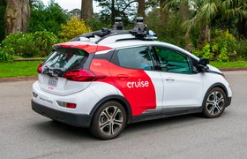
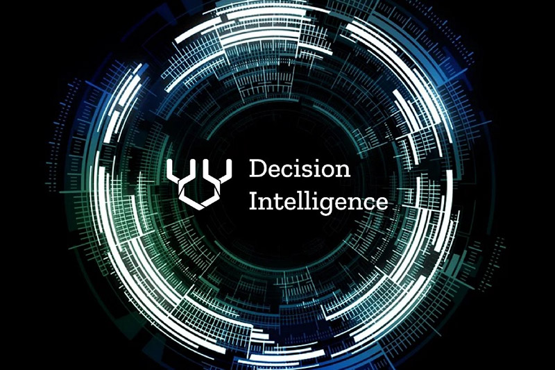

Интересное видео про выставку роботов в США CES 2022
Это интерсное видео про выставку роботов в США CES 2022
где учасники вытавки представляют людям свои полезные разроботки и гаджеты которые могут
помочь в жизни. В этом видео ты сможешь увидеть технику которая поможет в спорте,
очки которые помогут просматривать все что угодно со своево смартфона, роботов LG и еще много разных,
интересных роботов и устроиств.

Оживление на рынке беспилотных авто: GM владывается в Cruise
GM также намерена дополнительно инвестировать в Cruise $1,35 млрд, взяв на себя обязательство
фонда от 2018 года,
сообщает TechCrunch.
Не так давно Cruise запустил тестирование роботакси без водителя для широкой аудитории в Сан-Франциско, что
побудило
Softbank разблокировать свои инвестиционные активы.
Представители GM не исключают, что Cruise может стать публичной и выйти на IPO: руководство «рассмотрит все
возможности
для создания ценности для наших акционеров».
Генеральный директор и председатель GM Мэри Барра заявила, что сделка – важный шаг для увеличения
капитализации компании
и стратегического развития направления беспилотников внутри автомобильной корпорации.
Стратегия искусственного интеллекта: четыре приоритета для ИТ-директоров
Одним из наиболее важных приоритетов является определение областей с высокой отдачей и
возможностями внедрения в
бизнес-процессы ИИ-решений реального времени. Способность обрабатывать контекстную информацию в реальном
времени и
принимать решения «на лету» — это мощный способ дифференцировать продукты, услуги и опыт на насыщенном
рынке. Например, страховые компании могут автоматизировать обработку претензий для принятия решений в режиме
реального времени
на основе фотографий и видео, предоставленных заявителем прямо с места происшествия.

Как интеллектуальное принятие решений помогает организациям извлечь выгоду из собранных данных
Сбор данных стремительно расширяется. Согласно исследованию Statista, объем данных,
создаваемых, потребляемых и хранимых
во всем мире, к 2025 г. увеличится более чем на 50%. Атул Шарма, соучредитель и технический директор Peak,
обсуждает на
портале Information Age, как интеллектуальное принятие решений (decision intelligence, DI) помогает
организациям
раскрыть потенциал собранных данных. Предприятия понимают, что более эффективная оценка данных обеспечивает
конкурентное преимущество, и что этот потенциал
раскроет именно искусственный интеллект, а не BI.
Сценарии применения ИИ в веб-приложениях
Опрошенные порталом Information Age эксперты рассказывают о том, как искусственный интеллект
помогает компаниям серьезно
улучшать возможности веб-приложений.
Веб-приложения, хранящиеся на удаленных серверах и передаваемые через Интернет, позволяют организациям
выполнять задачи
без необходимости устанавливать продукты локально, снижая при этом затраты. В настоящее время на рынке
представлено
множество различных типов веб-приложений, но одной из технологий, которая действительно оказалась
революционной в этой
области, является ИИ.